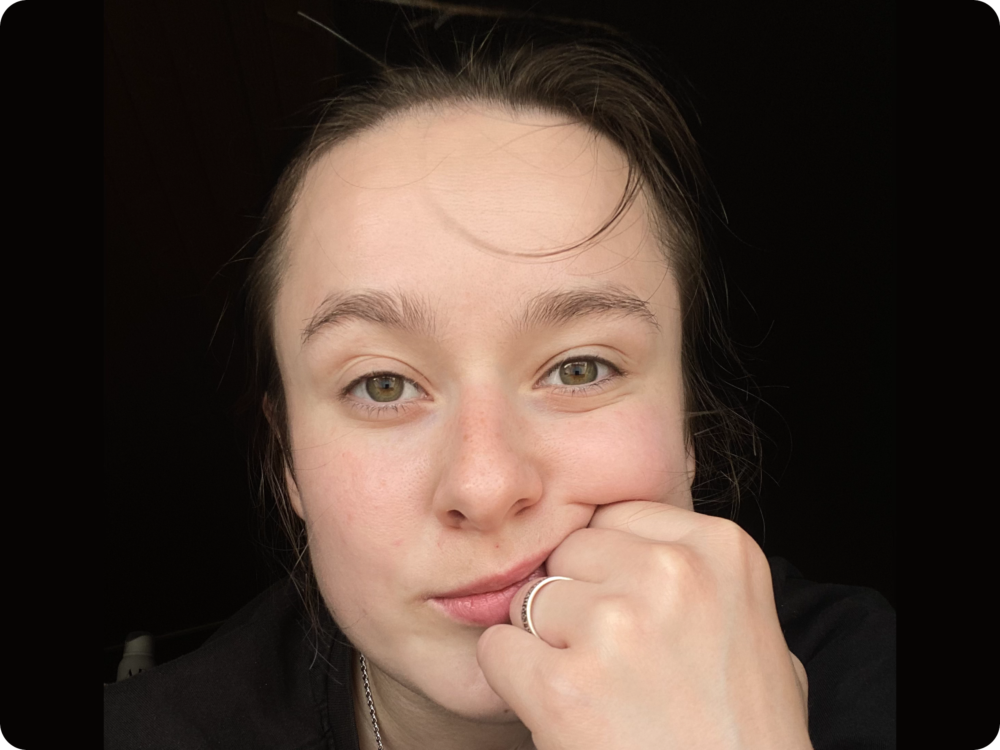
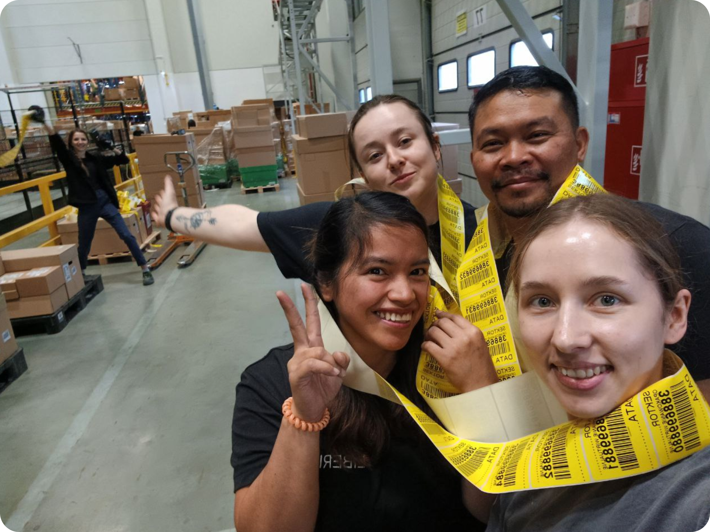
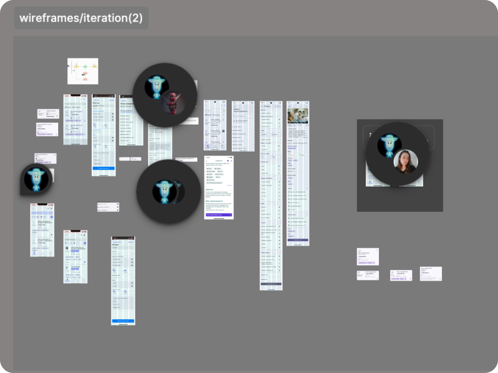
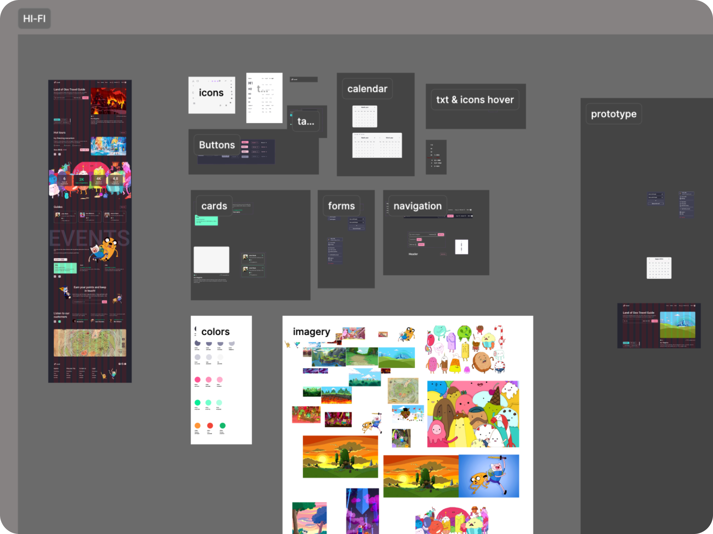

Naty Blashchuk - junior UI/UX designer, currently based in Warsaw.

Projects


From Medical Statistics to UX/UI Aesthetics

Hi, I’m Natalia, a junior UI/UX designer, currently based in Poland. With a background in healthcare and logistics, I bring a unique perspective to design by combining analytical thinking, adaptability, and a deep appreciation for human-centered solutions.
Worked with medical statistic, with base of patients and was responsible for patient flow reports. However, driven by a perspectives for growth and creativity, I always was interested into exploring other fields.
My experience in logistics and sales taught me teamwork, leadership, and effective communication, while also giving me the opportunity to practice foreign languages like Polish and English.


DESIGN BECAME MY FOCUS because it offers a dynamic and modern environment where I can merge various disciplines, including psychology, marketing, strategy, and development. It excites me to create intuitive and functional solutions that improve user experiences while also allowing me to continue growing and exploring new roles within the field.
My goal is to land a junior UI/UX position, where I can contribute my skills, creativity, and dedication to meaningful projects.
 Thank you for your time! To find out more use the links below.